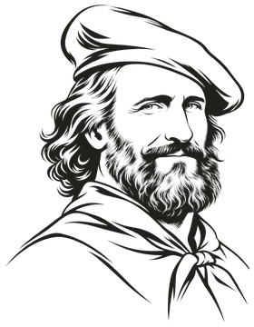

Andrea Tizzani
PhD Researcher in Economics · European University Institute, Florence
Research Interests
Political Economy
Economic History
Gender
Development Economics
References
Supervisor · European University Institute
Co-supervisor · European University Institute
Research
Working Papers
The Paradox of Charisma


Marcello De Cecco Prize 2025
EUI Second-Year Best Paper Award 2024
Draft available soon
Abstract
Can the promises of charismatic leaders unify a nation — and what happens when those
promises are not kept? I study Giuseppe Garibaldi's 1860 expedition through Southern Italy,
exploiting the unexpected halt of his march at Teano as a quasi-random break in exposure to
his charismatic appeal. Municipalities Garibaldi visited initially rallied behind Italian
unification, but withdrew their support as his promises went unmet: they showed weaker
opposition to brigandage, lower turnout in the 1913 suffrage expansion, fewer army
volunteers in 1866, and desertion of the governing coalition in 1948. Charisma raises the
expectations against which politics is later judged.
Presentations
EHS Annual Meeting 2025 (Glasgow) · Workshop in Economic History 2025 (Uppsala) ·
EAYE Annual Meeting 2025 (London) · Naples PhD and Post-Doc Workshop 2025 ·
EUI Micro-Econometrics Working Group 2025 · Mani Visibili 2025 (Lanciano) ·
AYEW Cultural and Economic History Workshop 2025 · PEARL Working Group 2026 (Florence) ·
Political Economy WIP Seminar 2026 (Milan) · NICEP 2026 (Nottingham)
Coverage —
La Fonte ·
Corriere della Sera
Work in Progress
Printing Progress?
with Thomas Taylor
Abstract
How does mass media shape gender norms? We study the expansion of newspapers across 620
districts of Victorian and Edwardian Britain. On average, newspaper access reinforced
traditional gender roles: female labor force participation declined, marriage accelerated,
and fertility rose. Yet these effects reversed in districts exposed to feminist messaging —
most notably the 1866 suffrage petition. Newspapers acted not just as information sources,
but as coordination technologies, amplifying or stalling change depending on timing,
content, and narrative salience.
Presentations
Growth, History and Development Annual Workshop 2025 (Odense) ·
Workshop in Economic History 2026 (Uppsala)
Other Writing
Women, Water and War: Gendering Domestic Peace in Africa
Valeria Solesin Award 2022
Master's dissertation
Abstract
Does gender equality make societies more peaceful? Across 29 African countries, I examine
whether intra-regional gender equality affects the incidence and brutality of internal
conflict, using distance to the closest water spring as an instrument for gender roles, in
the spirit of Boserup. Higher gender equality leads to less brutal — but not fewer —
conflicts: a one standard deviation increase in gender equality reduces conflict fatalities
by 0.21 standard deviations.
Coverage —
Alleyoop · Il Sole 24 Ore
Teaching
European University Institute · Teaching Assistant
Statistics and Econometrics I
Fall 2026
Ph.D. level · Instructor: Prof. Francesco Drago · EUI Ph.D. core course, Applied Economics and Econometrics sequence
Statistics and Econometrics I
Fall 2025
Ph.D. level · Instructor: Prof. Francesco Drago · EUI Ph.D. core course, Applied Economics and Econometrics sequence
Statistics and Econometrics I
Fall 2024
Ph.D. level · Instructor: Prof. Andrea Ichino · EUI Ph.D. core course, Applied Economics and Econometrics sequence
News
Oct 2025
"The Paradox of Charisma" was awarded the Marcello De Cecco Prize 2025 —
funded by the Bank of Italy and reserved for scholars under 30, for the best paper in
Economics and the History of Institutions. My
presentation
in Lanciano was broadcast by Radio Radicale.
Jun 2025
Out on Standard Errors 🌈 —
"Exploring identity, charismatic leadership, and historical data: a conversation with
Andrea Tizzani".
Nov 2022
My Master's dissertation "Women, Water and War" received the
Valeria Solesin Award,
covered by Alleyoop · Il Sole 24 Ore.